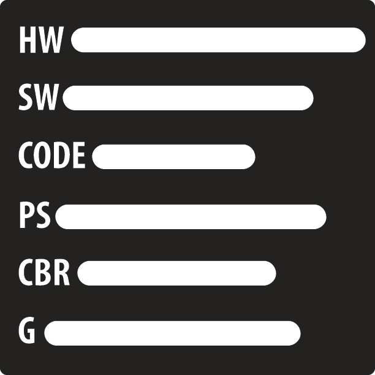
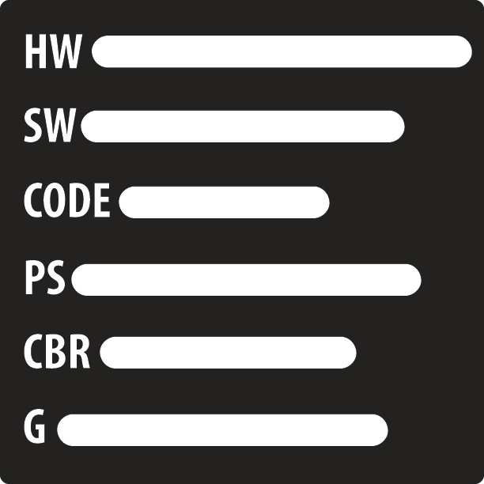

Jeremy Porter
My name is Jeremy Robert Porter and here’s a little history on me. My father’s parents are from Kansas, but he was raised in Chicago. My mother’s parents are from Mississippi, which is where she was raised. My parents met at Rust College in Holly Springs. Soon after graduating, they married moved to Chicago to raise their 3 children, of which I’m the youngest. Growing up, I rarely had a day where I did nothing. Monday through Friday I went to school, and on the weekends I would either be at a museum, some play, or some type of mind-developing function. My grandfather, who is an amazing man, and who I consider to be a polymath, was a pastor, so my family and I went to church every Sunday. My grandmother is an amazing woman and I credit her with introducing me to one of my favorite subjects to study, history. I can remember when she would take me to different art exhibits on the weekends. At the end of our day, she would have me write an essay on what I had learned and experienced from our trip. She also introduced me to the amazing world of mythological literature/folklore, which I still study to this day. My mother is also an amazing woman. She raised me to have morals and values that didn’t differ or diminish. She home-schooled me until I was able to start school at age 4, and even then she continued to teach me at home. She also supported me in diversifying my hobbies, which gave me the opportunity to enjoy a variety sports and activities growing up. I spent years skating, playing basketball, baseball, Yu-Gi-Oh, Pokemon, and many other games. My Father is an amazing man. He instilled in me courage and fearlessness at a young age. I have witnessed him speak in front of thousands of people at once, and without breaking a sweat, move the whole crowd emotionally with just a few words. I credit him with helping me hone my interpersonal and public-speaking skills. These people and others have played a significant role in shaping who I am today. Today I am a young and ambitious man whose goal is to start a chain of financial, spiritual, mental, and physical success for the current and future generations of this world. Year Up plays a part my journey of success by being a tool in which I craft the steps of success. With their help I while do my part in closing the opportunity divide!!!
Interesting facts about me
- I have a cat
- Enjoy gardening
- Like taking long walks
- My favorite food is sea food
 
